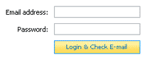

In order to use EMU Webmail, you must login. Logging in requires a valid email address and password.

First, enter your email address in the field provided. For example, yohan@company.com.
If your POP or IMAP server is different than company.com, try yohan@pop.company.com or yohan@imap.company.com. If you have difficulty determining the
appropriate email address format, contact your email provider.
Second, enter your password. Note, we do not store your password in EMU Webmail and, for security concerns, we intentionally do not offer any password saving
or auto-login functionality.
Next, select the interface you wish to use from the dropdown list. In most installations, this dropdown will have only a "normal" option. However, if the
Administrator has installed or customized alternative versions of the interface (for example, in French), it might be listed here.
Finally, click the "Login & Check Email" button. At this point, EMU Webmail will attempt to validate your email account information and direct you to your
Inbox. We will also send a "cookie" to your computer so that your browser will automatically remember your email address
the next time EMU Webmail is used. Again, we do not save your password and this cookie is safe.
If you experience difficulty logging in, specifically receiving errors that indicate an account is not found, there's an invalid password, etc, the correct
party to contact is the Administrator for your email service, not EMUMAIL Inc.